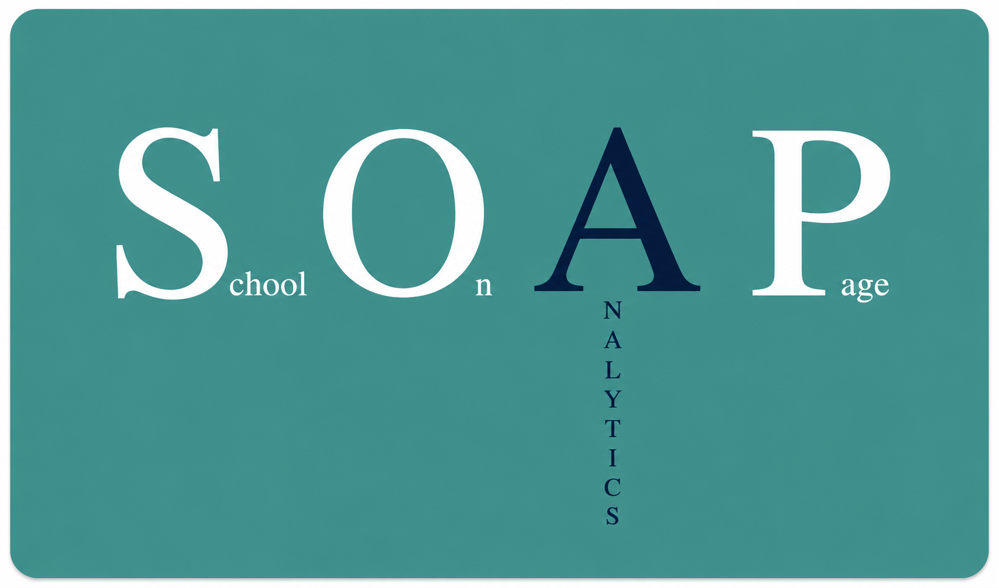

Version 1.3 · 12 November 2026
SOAP Analytics Ltd ("SOAP Analytics", "we", "us") provides school-level performance reporting, dashboards and leadership analysis to schools and trusts.
This notice explains how we handle personal information when you visit soapanalytics.co.uk, contact us, or use the SOAP Analytics platform.
Where we are the controller. We decide why and how we use personal information about: people who enquire about our services; our business contacts at schools, trusts and suppliers; our invoicing, legal compliance and relationship-management records; people who give us testimonials; and visitors to our public website. Sections 3 and 5 to 11 describe this.
Where we are a processor. Schools and trusts that subscribe to SOAP Analytics ("clients") use the platform to enter, upload and publish their own information. For personal information we process solely to deliver the service, the client is the controller and we act as its processor, under our Master Services Agreement and its Data Processing Schedule. This includes the details of the client's own platform users (for example names, email addresses, roles and access permissions) and messages sent through the platform. We handle it only on the client's documented instructions and to provide the service. If you are a member of staff, a governor, trustee, parent or pupil at a client and you want to know how your information is used, or to exercise your rights over it, please contact the school or trust first. If you contact us, we will pass your request to the relevant client. How we notify clients of personal-data breaches, and how we return or delete client personal data at the end of a contract, are set out in the Master Services Agreement and the Data Processing Schedule.
| Information | Source | Why we use it | Lawful basis (UK GDPR Art 6) |
|---|---|---|---|
| Enquiries: name, school or trust, email address, optional phone number, services of interest, optional message | You, through the register-interest form, or by email, phone or message | To respond to your enquiry and discuss our services | Legitimate interests: responding to enquiries made on behalf of schools and trusts, which is what people would expect when they contact us |
| Business contact details and correspondence: name, role, organisation, contact details, communications with us | You, your organisation | To manage our relationships with clients, prospective clients and suppliers | Legitimate interests: running and administering our business. Where the person is an individual who is themselves party to a contract with us (for example a sole-trader supplier), contractual necessity |
| Website technical and security information: IP address and request details processed by our hosting providers when you visit our public website | Your browser | To deliver the website, protect it and investigate problems | Legitimate interests: security and reliable operation |
| Testimonials: name, job title, organisation and a quotation | The person who gave it | To show prospective clients what current users say about our service | Legitimate interests: promoting our services using feedback people have chosen to give us. You can ask us to remove a testimonial at any time (see section 10) |
| Company and tax records | You, our systems | To keep accounts and meet our legal obligations | Legal obligation; legitimate interests |
Where we rely on legitimate interests, you have the right to object (see section 10). We do not use automated decision-making that has legal or similarly significant effects, and we do not sell personal information.
Enquiries and marketing. We do not operate an automated marketing mailing list. We respond to enquiries individually and may follow up where relevant to your enquiry or an existing relationship. If you ask us not to contact you, we will stop. Where the law requires your consent for a particular kind of electronic marketing, we will ask for it.
SOAP Analytics is designed for school-level performance analysis, leadership reporting and processing of Ofsted IDSR documents. It is not designed to collect or analyse pupil-identifiable personal data, and clients should not enter it. On a client's behalf we handle the information the client enters or uploads, such as school performance and context information, completion and contributor-tracking information, uploaded IDSR files and the reports and dashboards produced from them, the names, email addresses, roles and access permissions of the client's platform users and records of their sign-in and activity, and messages, notifications and reminders sent through the platform. Because uploaded documents and free-text fields are controlled by the client, we cannot guarantee that they will never contain personal information. We do not use client information for our own purposes. How it is used and who can see it within a school or trust are matters for the client, subject to the Master Services Agreement and Data Processing Schedule.
We use the following service providers to run SOAP Analytics. They process information for us under contractual terms. For client information, our clients' Data Processing Schedule lists the sub-processors we use, and clients can ask us for the current list.
| Provider | What it does for us |
|---|---|
| Supabase | Stores operational client and platform data, including user email addresses, and provides user authentication, file storage and server functions. Our Supabase project is hosted in London, UK (AWS eu-west-2). |
| Netlify | Hosts and delivers the website. |
| GitHub | Stores and manages the website's files, which are deployed to the website through Netlify. These files are not intended to contain personal information. |
| Microsoft 365 | Our business email; sending platform notification and reminder emails; and storage of our business files and internal backup copies in OneDrive for Business. |
| IONOS | Registers and manages our domain name and its DNS records. |
| jsDelivr | A content delivery network from which the website loads software libraries (for example Supabase and Chart.js). Your browser contacts it when you load a page that uses them. |
| Google Fonts | Supplies the typefaces on our home page and pricing brochure. Your browser contacts Google when those pages load. |
If you click the LinkedIn or WhatsApp links on our home page, you leave our site and that service's own privacy notice applies. We may also share information with our professional advisers, with a client (for information about its own users), and where required by law or to protect our legal rights.
Our Supabase database is hosted in London. Our Microsoft 365 account stores our email, Teams, OneDrive and SharePoint data at rest in the UK. This does not mean that all processing of personal information takes place only in the UK. Some of our providers, including those that host and deliver the website, may process information outside the UK, including through support staff, systems or network locations, and your browser may contact servers outside the UK when it loads the website. UK GDPR requirements for international transfers apply to any such processing. Our contracts with clients require that client personal data is not transferred outside the UK unless it is permitted by law and protected by a lawful safeguard, such as a UK adequacy regulation (which includes the UK–US Data Bridge for certified US providers), the UK International Data Transfer Agreement or the UK Addendum to approved standard contractual clauses. We are completing our own assessment of these arrangements. You can contact us for more information.
We have not set fixed retention periods for every category of information. We keep personal information only for as long as it is needed for the purpose for which we collected it, using these criteria.
| Information | How long we keep it |
|---|---|
| Enquiries and business contacts | For as long as needed to deal with the enquiry and any resulting relationship, and while they remain relevant to our business records. |
| Platform user accounts and access records (client information we process as a processor) | While the user needs access under the client's subscription. Account access can be withdrawn when the client asks or tells us it is no longer needed. Requests for deletion of associated personal information are assessed and handled in accordance with our applicable obligations. |
| Messages, notifications, reminders and activity or audit records | For as long as needed to support users, evidence what actions were taken and keep the platform secure. We have not yet set fixed periods for these records. |
| Testimonials | While we continue to use them, unless you ask us to remove yours. |
| Client information we process as a processor | For the duration of the contract, and then in accordance with the Master Services Agreement and Data Processing Schedule, which provide for the return or deletion of client personal data after termination, including operational copies and residual backups. |
| Backups | Our database provider keeps backups for a limited period that it sets. We also take independent backup copies manually and keep them in our Microsoft 365 account for resilience and recovery. These copies are kept while needed for that purpose and are not currently deleted automatically. |
| Company and tax records | As required by law. |
In our audit of the website's current pages we did not identify advertising or analytics tracking, and we did not identify cookies set by our own pages. We cannot make claims about every possible third-party technology. When you sign in to the platform, necessary browser storage on your device supports your authenticated session, so that you remain signed in as you move between pages and the platform can check you are entitled to see what you request. You can clear site storage through your browser settings; doing so may sign you out or prevent you signing in. The third-party resources in section 5 (jsDelivr and Google Fonts) receive your IP address and browser details when your browser loads them.
We use access controls, separation between client schools, secure connections and the security measures of our providers to protect information. Access to client information is limited to those who need it. No system is completely secure. If a personal-data breach affects client personal data, we notify the client without undue delay after becoming aware of it, as required by our Master Services Agreement and Data Processing Schedule. If a breach affects information for which we are the controller, we assess it and report it to the ICO where the law requires.
Under UK data-protection law you have the right to:
To exercise a right over information for which we are the controller, email robin@soapanalytics.co.uk. We will normally reply within one month and may need to confirm your identity. For information we hold as a processor for a school or trust, please contact that organisation, or contact us and we will pass your request on.
If you are unhappy with how we have used your information, please contact us first at robin@soapanalytics.co.uk so we can try to put it right. You also have the right to complain to the Information Commissioner's Office (ICO): ico.org.uk, telephone 0303 123 1113.
We will update this notice when our practices change and show the version and date at the top. This is version 1.3, dated 12 November 2026.
← Back to SOAP Analytics